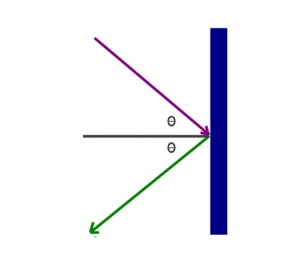

反射
本章節中，我們將以水波介紹波的反射現象。
當波遇上障礙物時，波會進行反射，

如圖中所示 ，法綫（normal）是與障礙物平面（barrier）
互相垂直的一條假象綫，入射波（original Wave） 為向障礙物傳播的波，反射波（reflected wave） 為被障礙物反射出的波。
法綫與入射波之間的夾角為入射角，而法綫與反射波之間的夾角為反射角，根據反射定律，入射角等於反射角。
**在發生反射後，波的速率、頻率與波長均沒有改變
在波（包括光波、水波、聲波等）進行反射時，均會遵循以下規則：
- 反射線跟入射線和法線在同一平面內。
- 反射角等於入射角。
另外，在進行反射時，物距會與像距相等。（下圖Object至Mirror的距離為物距，Image至Mirror的距離為像距）

當我們要畫一個波的反射影像時，我們要根據物距=像距，找出虛像（下圖灰色部分）的位置，再繪畫與原來的波一樣的圖像，即可得出反射影像。
以圓形波作爲示範
先找出S點與圓形波之間的距離，再在鏡子后標出S'，再模仿原本的波繪畫，在鏡子左方的圖像即為最終的影像（下圖）。